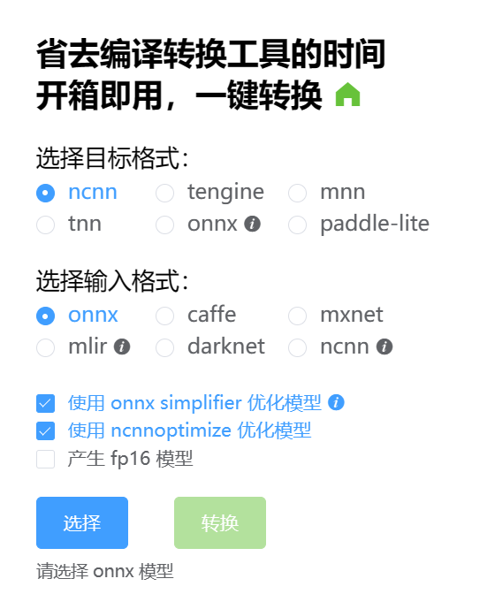
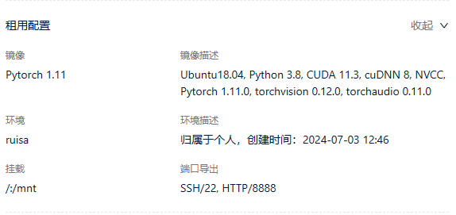
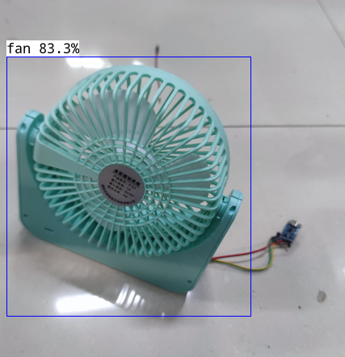
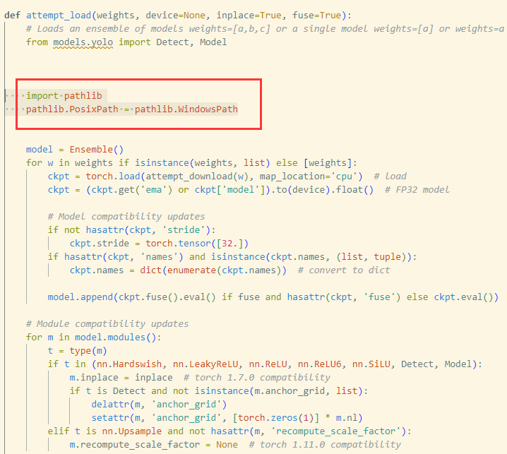
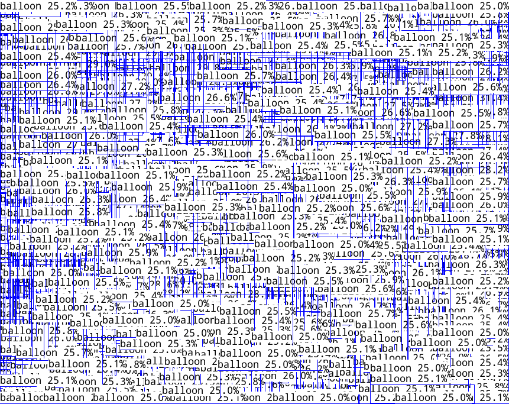
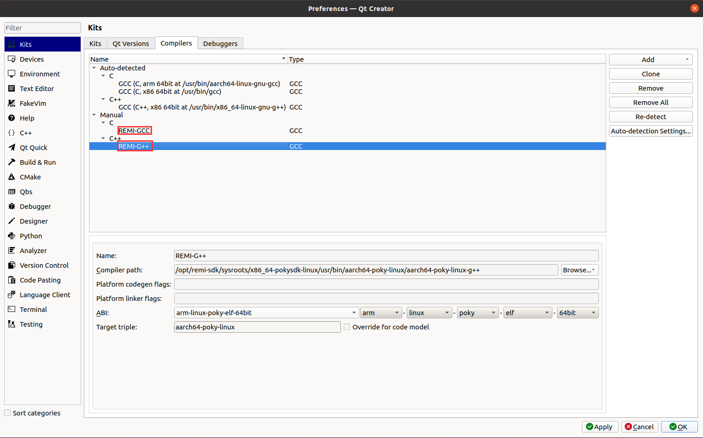
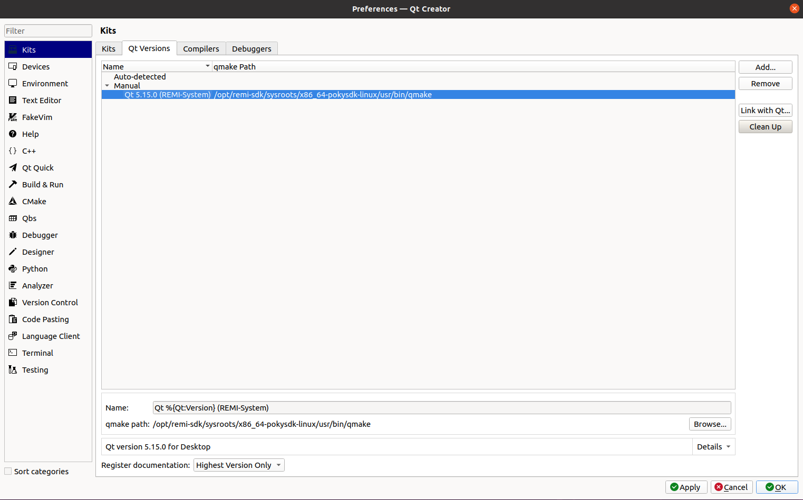
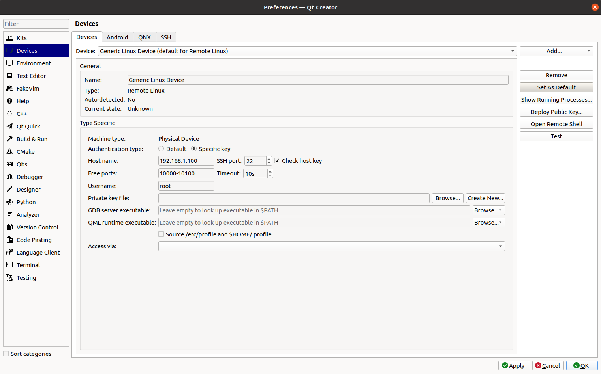
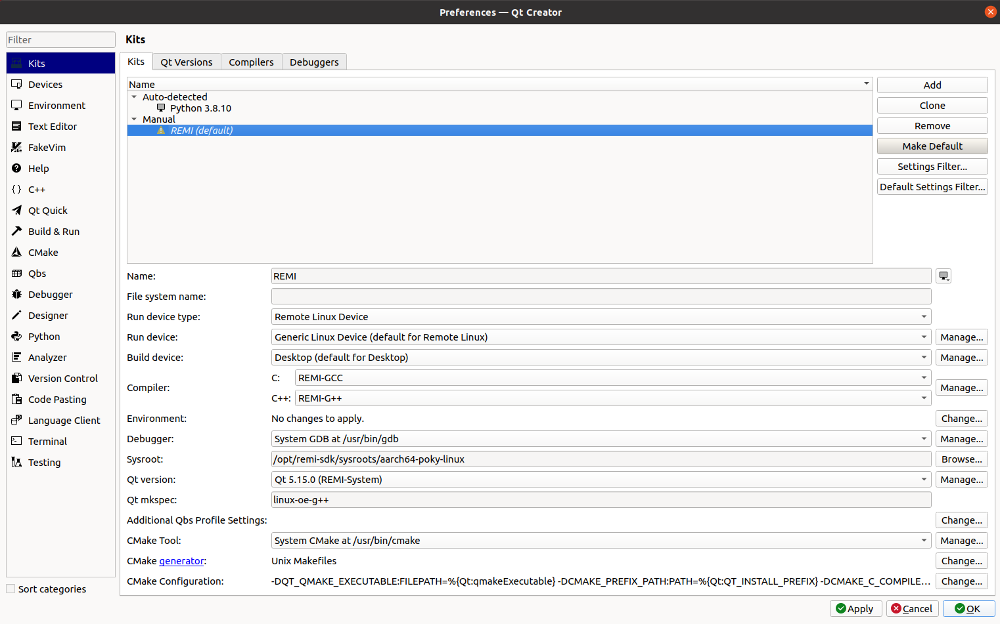
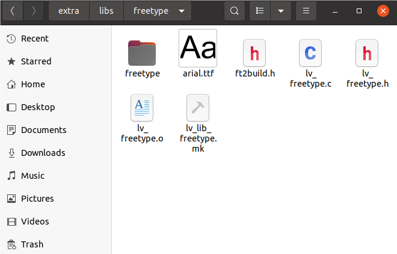

记录|瑞米派嵌入式Linux开发
前言
由于比赛需要，需使用瑞米派进行Linux嵌入式软件开发。
性能方面：RZ/G2L处理器配备Cortex-A55 1.2GHz CPU、Cortex-M33@200MHz MCU、Arm Mali-G31 的3D 图形加速引擎以及支持视频编解码器。
软件方面也十分丰富，官方镜像myir-image-full包含常用系统和调试工具，支持shell、C、C++、python3，带qt5.15运行所需的所有环境，在官方例程中，提供了QT、LVGL两大图形库的例程，开箱即用，非常便于新手起步学习Linux嵌入式开发
常用指令|自存
1 | killall app2 #终止原版yocto镜像中开机自启的QT应用，释放接口与内存 |
主机部署SDK
依官方要求，推荐使用Ubuntu20.04 64bit(desktop)，双核以上CPU，8GB以上内存，200GB硬盘。
- 配置环境
在主机中安装所需的软件包：1
2
3
4
5
6sudo apt-get update
sudo apt-get install gawk wget git-core diffstat unzip texinfo gcc-multilib
sudo apt-get install build-essential chrpath socat cpio python3 python3-pip
sudo apt-get install python3-pexpect xz-utils debianutils iputils-ping
sudo apt-get install python3-git python3-jinja2 libegl1-mesa libsdl1.2-dev
sudo apt-get install pylint3 xterm libssl-dev libyaml-dev - 配置SDK
在官方资料中下载SDK，位于03-Tools/Toolchains/sdk.tar.bz2中，复制到主机中并解压：1
tar -xvf <文件名>
- -x 表示提取文件
- -v 表示详细模式，显示每个被提取的文件的名称
- -f 后接指定存档文件的名称
- 安装SDK
在解压目录中，可发现安装脚本：poky-glibc-x86_64-myir-image-full-aarch64-myir-remi-1g-toolchain-3.1.20.sh，执行即可，它会询问你想要安装在哪里，笔者选择的是：/opt/remi-sdk - 测试
首先，安装目录底下有个环境脚本，其中配置了一些变量，如所使用编译器、版本等参数，每次需编译前都需使用source引入环境变量：而后使用echo命令即可得到所配置的环境变量，如果先前步骤正确，则输出应为：1
source /opt/remi-sdk/environment-setup-aarch64-poky-linux
1
2remi@ubuntu:~$ echo $CC
aarch64-poky-linux-gcc -mtune=cortex-a55 -fstack-protector-strong -D_FORTIFY_SOURCE=2 -Wformat -Wformat-security -Werror=format-security --sysroot=/opt/remi-sdk/sysroots/aarch64-poky-linux
进而，可以直接使用$CC -v查看编译器版本信息。
注：不要忽略掉$，在bash中这是取变量内容的意思，会直接替换掉原内容，相当于C语言的define
部署神经网络模型
在本次开发中，被我选择移植至瑞米派的是ncnn，这是因为瑞米派无NPU，只能使用CPU推算神经网络模型，而按照官方的说法：
“ncnn 是一个为手机端极致优化的高性能神经网络前向计算框架。 ncnn 从设计之初深刻考虑手机端的部署和使用。 无第三方依赖，跨平台，手机端 cpu 的速度快于目前所有已知的开源框架。”
由此得知ncnn框架非常适合在仅使用CPU的平台上使用。经实际测试，在瑞米派上执行：
- squeezenet-ssd: 84ms
- yolov5s: 2044ms
很慢，但至少能跑起来。
- 克隆工程
首先，克隆官方仓库到开发环境中，这会在你的工作目录中下载一个名为ncnn的库1
sudo git clone https://github.com/Tencent/ncnn.git
- 编写命令shell
在工程目录/ncnn中编写shell指令，source指令是用于引用开发SDK的环境变量1
vi test.sh
1
2
3
4
5
6
7
8
9!/usr/bin/env bash
#### remi
mkdir -p build-for-remi # 新建目录
pushd build-for-remi # 进入目录
source /opt/remi-sdk/environment-setup-aarch64-poky-linux # 引入环境
cmake .. -DCMAKE_BUILD_TYPE=Release -DNCNN_BUILD_EXAMPLES=ON -DNCNN_SIMPLEOCV=ON # 使用CMakeLists生成Mackfile
make -j4 # 执行Makefile
make install
popd # 回到上一级目录 编译例程
使用chmod赋予执行权限后执行上述编写的脚本，在build-for-remi/example中可发现编译出来的例程，我们以yolov5为例子，使用file \1
2remi@ubuntu:~/Desktop/ncnn/build-for-remi/examples$ file yolov5
yolov5: ELF 64-bit LSB shared object, ARM aarch64, version 1 (SYSV), dynamically linked, interpreter /lib64/ld-linux-aarch64.so.1, for GNU/Linux 3.14.0, BuildID[sha1]=2d9245aff966b326567859b79cd8d973f879d303, with debug_info, not stripped易知它是aarch架构的，符合我们的目标开发板
在开发板中执行
推荐使用Mobaxterm链接ssh，进行命令行控制的同时，可以上传\下载文件
在模型文档中下载yolov5s_6.0.bin、yolov5s_6.0.param、先前编译出来的二进制文件并自行找一张图片放在同一个目录下，
使用指令执行二进制文件执行神经网络预测：1
./yolov5 bus.jpg
可发现目录下生成了image.png,这便是预测的结果
使用自己训练的模型
首先，需要将yolov5训练得到的pt模型转换为更加通用的onnx模型，再使用在线模型转换，将onnx模型转换为ncnn模型，从而可被ncnn框架解析并推理。

在netron中，可查看模型的架构与训练层，还有输入层、输出层的名字。修改源文件
在ncnn/example中存放着例程的源码文件，还是以yolov5.cpp为例，全文五百多行，但别慌，需要更改的东西其实很少，主要有三个地方：
- 在detect_yolov5函数中将load_param和load_model替换为自己模型的名字
- 在其后，修改输入层与三个输出层的名字
- 在draw_objects函数中，将class_name修改为实际模型的识别类别
修改完毕后，重新执行一次shell指令即可，生成执行自己模型的二进制文件
训练Yolov5模型
为了使作品更加智能化、现代化，我使用YoloV5模型训练模型进行图像识别。
租用云平台
在本次竞赛中，我使用的是矩池云，选用已经配置好环境的镜像可以为我们节省很多麻烦

配置训练环境
在官方仓库中选择v7版本的yolov5，打包下载粘贴到在线环境中，再进行环境配置：1
pip install -r requirements.txt
准备数据集
数据集结构：1
2
3
4
5
6
7├── score
├─ images
│ ├─ train # 下面放训练集图片
│ └─ val # 下面放验证集图片
└─ labels
├─ train # 下面放训练集标签
├─ val # 下面放验证集标签
训练集应至少100张，验证集不少于训练集的50％
在数据集目录中：1
2
3conda activate Yolov5
pip install labelimg -i https://mirror.baidu.com/pypi/simple
labelimg
会打开标注图片的软件，完成以下配置：
- 打开图片目录
- 更改保存目录并设置自动保存
- 标记、画框,使用ctrl+s,按d切换下一张
修改参数文件yaml
模型参数在：/yolov5-7.0/models/
数据集参数在：/yolov5-7.0/data/训练模型
等待其执行完成，模型的生成目录会一并在命令行给出，一般在runs/train/中1
2python train.py --data balloon_data.yaml --cfg balloon_yolov5s.yaml --weights pretrained/yolov5s.pt --epoch 100 --batch-size 16 --device 0
python train.py --data fan_data.yaml --cfg fan_yolov5s.yaml --weights yolov5s.pt --epoch 100 --batch-size 16 --device 0模型测试
1
2
3
4# 使用图片测试
python detect.py --source data/images/balloon.jpg --weights trained/balloon.pt
# 使用摄像头测试
python detect.py --source 0 --weights train_model/fan.pt模型转换
上文我们训练出来的模型是为Pytorch使用的（后缀为.pt,tenseflow则为.pb）,我们需要将其转换为更通用的onnx模型。 - 修改models/yolo.py
1
2
3class Detect(nn.Module):
def forward(self, x):
self.training = True #加入这句可以使得导出来的模型为训练模型，这样就不会加入后处理代码了 修改export.py
导出模型
1
python ./export.py --weights ./trained/fan.pt --imgsz 640 --include onnx --simplify --opset 11
由于上述提到的在线模型转换工具用不了，我使用的是官方编译出来的转换工具
1
./onnx2ncnn fan.onnx fan.param fan.bin
注意
将训练的模型从云端服务器copy回主机测试运行时，发现报错：
1
2
3
4
5
6
7
8
9
10
11
12
13
14
15
16
17
18
19
20
21
22
23
24(Yolov5) D:\Python\yolov5-7.0>python detect.py --source 0 --weights train_model/best.pt
detect: weights=['train_model/best.pt'], source=0, data=data\coco128.yaml, imgsz=[640, 640], conf_thres=0.25, iou_thres=0.45, max_det=1000, device=, view_img=False, save_txt=False, save_conf=False, save_crop=False, nosave=False, classes=None, agnostic_nms=False, augment=False, visualize=False, update=False, project=runs\detect, name=exp, exist_ok=False, line_thickness=3, hide_labels=False, hide_conf=False, half=False, dnn=False, vid_stride=1
YOLOv5 2022-11-22 Python-3.8.17 torch-1.10.0 CUDA:0 (NVIDIA GeForce MX450, 2048MiB)
Traceback (most recent call last):
File "detect.py", line 259, in <module>
main(opt)
File "detect.py", line 254, in main
run(**vars(opt))
File "D:\Anaconda3\envs\Yolov5\lib\site-packages\torch\autograd\grad_mode.py", line 28, in decorate_context
return func(*args, **kwargs)
File "detect.py", line 96, in run
model = DetectMultiBackend(weights, device=device, dnn=dnn, data=data, fp16=half)
File "D:\Python\yolov5-7.0\models\common.py", line 345, in __init__
model = attempt_load(weights if isinstance(weights, list) else w, device=device, inplace=True, fuse=fuse)
File "D:\Python\yolov5-7.0\models\experimental.py", line 79, in attempt_load
ckpt = torch.load(attempt_download(w), map_location='cpu') # load
File "D:\Anaconda3\envs\Yolov5\lib\site-packages\torch\serialization.py", line 607, in load
return _load(opened_zipfile, map_location, pickle_module, **pickle_load_args)
File "D:\Anaconda3\envs\Yolov5\lib\site-packages\torch\serialization.py", line 882, in _load
result = unpickler.load()
File "D:\Anaconda3\envs\Yolov5\lib\pathlib.py", line 1044, in __new__
raise NotImplementedError("cannot instantiate %r on your system"
NotImplementedError: cannot instantiate 'PosixPath' on your system这是因为读取模型错误，在windows中使用了linux的读取函数，我们在models/experimental的atteampt_load函数中新增以下语句即可：
1
2import pathlib
pathlib.PosixPath = pathlib.WindowsPath
转换的模型，部署在板端的时偶发梯度爆炸，目前原因未知。（已解决，修改param的reshape的0值为-1）

OpenCV的使用
移植
opencv作为一个纯C语言编写的库，可以很方便地与我们的工程结合起来,
- 下载opencv源代码
作为著名的开源工程，其全部源代码向全社会公开：源码下载,笔者本次下载的是4.8.0版本 修改CMakeLists
位于opencv-4.8.0/platforms/linux/aarch64-gnu.toolchain.cmake1
2
3
4
5
6
7
8
9
10
11
12set(CMAKE_SYSTEM_PROCESSOR aarch64)
set(GCC_COMPILER_VERSION "" CACHE STRING "GCC Compiler version")
set(CMAKE_C_COMPILER aarch64-poky-linux-gcc)
set(CMAKE_CXX_COMPILER aarch64-poky-linux-g++)
Set(CMAKE_C_FLAGS "-mtune=cortex-a55 -fstack-protector-strong -D_FORTIFY_SOURCE=2 -Wformat -Wformat-security -Werror=format-security --sysroot=/opt/remi-sdk/sysroots/aarch64-poky-linux")
set(CMAKE_CXX_FLAGS "-mtune=cortex-a55 -fstack-protector-strong -D_FORTIFY_SOURCE=2 -Wformat -Wformat-security -Werror=format-security --sysroot=/opt/remi-sdk/sysroots/aarch64-poky-linux")
set(GNU_MACHINE "aarch64-pocky-gnu" CACHE STRING "GNU compiler triple")
include("${CMAKE_CURRENT_LIST_DIR}/arm.toolchain.cmake")其中，参数sysroot是SDK安装的目录
编译
在opencv下新建一个build目录1
2
3
4source /opt/remi-sdk/environment-setup-aarch64-poky-linux
cmake .. -DCMAKE_TOOLCHAIN_FILE=/home/remi/Desktop/opencv/opencv-4.8.0/platforms/linux/aarch64-gnu.toolchain.cmake -DCMAKE_INSTALL_PREFIX=/home/remi/Desktop/opencv/install
make -j4
make install其中，DCMAKE_TOOLCHAIN_FILE指定了所使用的工具链，也就是我们第二步修改的；DCMAKE_INSTALL_PREFIX指定了install的目录，即交叉编译出来的opencv库。
编译完成后，在install/lib下可看见46个动态链接库文件，将其复制到Remi Pi的lib64文件夹下，即可在板端运行opencv。使用
一个标准的工程结构：
1
2
3
4├── build
│ └── opencv_test_demo
├── CMakeLists.txt
└── main.cpp- 编写CMakeLists
1
2
3
4
5
6
7
8
9
10
11
12
13
14
15
16
17
18
19
20
21
22
23
24
25
26
27
28
29
30
31
32
33
34
35
36
37
38
39
40
41cmake_minimum_required(VERSION 3.16.2)
project(opencv_test)
set(CMAKE_CROSSCOMPILING TRUE)
set(CMAKE_SYSTEM_NAME Linux)
set(CMAKE_SYSTEM_PROCESSOR aarch64)
set(CMAKE_CXX_STANDARD 11)
#需要配置环境
set(CMAKE_C_COMPILER "aarch64-poky-gcc")
set(CMAKE_CXX_COMPILER "aarch64-poky-linux-g++")
set(CMAKE_C_COMPILER_FORCED TRUE)
set(CMAKE_CXX_COMPILER_FORCED TRUE)
set(CMAKE_C_FLAGS "-mtune=cortex-a55 -fstack-protector-strong -D_FORTIFY_SOURCE=2 -Wformat -Wformat-security -Werror=format-security --sysroot=/opt/remi-sdk/sysroots/aarch64-poky-linux")
set(CMAKE_CXX_FLAGS "-mtune=cortex-a55 -fstack-protector-strong -D_FORTIFY_SOURCE=2 -Wformat -Wformat-security -Werror=format-security --sysroot=/opt/remi-sdk/sysroots/aarch64-poky-linux")
#本机实际交叉编译出来的opencv库的路径
set(OPENCV_PATH /home/remi/Desktop/opencv/build)
include_directories(${OPENCV_PATH}/include/opencv4)
link_directories(${OPENCV_PATH}/lib)
set(OPENCV_LIBS ${OPENCV_LIBS} opencv_core opencv_imgcodecs opencv_imgproc)
# 设置 OpenCV_DIR 以找到 OpenCVConfig.cmake
set(OpenCV_DIR ${OPENCV_PATH}/lib/cmake/opencv4)
# 设置 OpenCV 库
find_package(OpenCV REQUIRED)
add_executable(${PROJECT_NAME} main.cpp)
set(OPENCV_LIBS opencv_core opencv_imgcodecs opencv_imgproc opencv_videoio opencv_highgui)
target_link_libraries(${PROJECT_NAME} ${OPENCV_LIBS}) - 编写main.c
1
2
3
4
5
6
7
8
9
10
11
12
13
14
15
16
17
18
19
20
21
22
23
24
25
26
using namespace cv;
int main(int argc, char **argv) {
Mat image;
image = imread("./test.jpg");
if(!image.data)
{
printf("no image data (./demo.jpg)\n");
return -1;
}
else
{
printf("read image succes!\n");
}
Mat dst;
cvtColor(image, dst, CV_BGR2GRAY);
imwrite("grey_image.jpg", dst);
printf("img change grey successfully!\n");
return 0;
}测试程序2
1
2
3
4
5
6
7
8
9
10
11
12
13
14
15
16
17
18
19
20
21
22
23
24
25
26
27
28
29
30
31
32
33
34
35
36
37
38
39
40
41
42
43
44
int main()
{
// 打开默认摄像头
cv::VideoCapture cap(0);
if (!cap.isOpened()) {
std::cerr << "无法打开摄像头" << std::endl;
return -1;
}
else
{
std::cerr << "成功打开摄像头" << std::endl;
}
// 读取一帧
cv::Mat frame;
cap >> frame;
if (frame.empty()) {
std::cerr << "无法读取帧" << std::endl;
return -1;
}
// 保存帧为图片
if (!cv::imwrite("snapshot.jpg", frame)) {
std::cerr << "无法保存图片" << std::endl;
return -1;
}
std::cout << "照片已捕捉并保存为 snapshot.jpg" << std::endl;
return 0;
} - 编译
输入以下指令，即可生成目标文件。1
2
3
4mkdir build
cd build
cmake ..
makeHMI人机交互界面
Qt
Qt 是一个跨平台的 C++ 框架，广泛用于开发图形用户界面（GUI）应用程序和跨平台软件，其提供了丰富的功能库，涵盖了从 GUI 到数据库访问、网络通信、多媒体处理等各个方面。笔者使用的是QT5.15.0配置交叉编译环境
- 在Edits-> Preferences-> Kits-> Compilers中添加交叉编译器路径，包括GCC与G++：
 - 更改QT Version：
 - 添加devices
 - 添加开发套件Kits
“Name”设置为”REMI”
“Device” 选择”Generic Linux Device 选项
“Sysroot”选择目标设备的系统目录，这里以”/opt/remi-sdk/sysroots/aarch64-poky-linux
“Compiler”选择之前配置的名称”REMI-G++”与”REMI-GCC”
“Qt version”选择之前配置的名称”Qt5.15.0 (REMI-System)”
“Qt mkspec”填写为”linux-oe-g++”
其它默认，最后点击”Apply”和”OK”按钮
自己的工程
- 直接在QT Creator中创建工程即可，注意Kits（套件）选择刚刚新建的REMI即可
- 编写代码
- build target
运行
在/usr中可找到工程文件夹，将编译出来的二进制文件复制到板中，并执行：1
2export QT_QPA_PLATFORM=linuxfb
./Test-for-Rem # -platform linuxfbLVGL
LVGL（Light and Versatile Graphics Library）是一个开源的图形库，专为嵌入式系统设计，适合资源受限的嵌入式环境，且作为一个纯C语言编写的库，它具有高度的可移植性。官方例程
官方例程配置地很完善,只需要两步即可将例程跑起来 - 克隆工程
在官方资源下载source文件中的lvgl压缩包放入开发环境中并解压：1
tar -xvf lvgl.tar.bz2
编译
1
2source /opt/remi-sdk/environment-setup-aarch64-poky-linux
make -j4在当前目录中即会生成一个名为lvgl_demod的可执行文件
运行
使用ssh、FTP等方式将可执行文件传到开发板,即可执行1
2chmod +x lvgl_demo
./lvgl_demo笔者附：官方的例程似乎参考了韦东山的lvgl例程，在此附上一并作为参考：韦东山 / stm32mp157-lvgl,在瑞萨官方论坛中有移植过程：瑞萨移植过程
工程文档解析
- Makefile
查看工程目录下的Makefile:CFLGES中定义参数的含义为：1
2
3
4
5
6
7
8
9
10
11
12
13
14
15
16
17
18
19
20
21
22
23
24
25
26
27
28
29
30
31
32
33
34
35
36
37
38
39
40
41
42
43
44
45
46
47
48
49
50LVGL_DIR_NAME ?= lvgl # 意为设定默认值
LVGL_DIR ?= ${shell pwd} # 同上，但是查询shell变量
# 编译器标志 (CFLAGS)
CFLAGS = -O3 -g0 -I$(LVGL_DIR)/ -Wall -Wshadow -Wundef -Wmissing-prototypes -Wno-discarded-qualifiers -Wall -Wextra -Wno-unused-function -Wno-error=strict-prototypes -Wpointer-arith -fno-strict-aliasing -Wno-error=cpp -Wuninitialized -Wmaybe-uninitialized -Wno-unused-parameter -Wno-missing-field-initializers -Wtype-limits -Wsizeof-pointer-memaccess -Wno-format-nonliteral -Wno-cast-qual -Wunreachable-code -Wno-switch-default -Wreturn-type -Wmultichar -Wformat-security -Wno-ignored-qualifiers -Wno-error=pedantic -Wno-sign-compare -Wno-error=missing-prototypes -Wdouble-promotion -Wclobbered -Wdeprecated -Wempty-body -Wtype-limits -Wshift-negative-value -Wstack-usage=2048 -Wno-unused-value -Wno-unused-parameter -Wno-missing-field-initializers -Wuninitialized -Wmaybe-uninitialized -Wall -Wextra -Wno-unused-parameter -Wno-missing-field-initializers -Wtype-limits -Wsizeof-pointer-memaccess -Wno-format-nonliteral -Wpointer-arith -Wno-cast-qual -Wmissing-prototypes -Wunreachable-code -Wno-switch-default -Wreturn-type -Wmultichar -Wno-discarded-qualifiers -Wformat-security -Wno-ignored-qualifiers -Wno-sign-compare
# 链接器标志 (LDFLAGS)
LDFLAGS = -lm -lpthread
# 本地编译标志 (LOCAL_CFLAGS)
LOCAL_CFLAGS = -I/media/disk_p/duxy/nxp/opt_5.15/sysroots/x86_64-pokysdk-linux/usr/include/drm
# 综合编译标志 (CCFLAGS)
CCFLAGS = $(LOCAL_CFLAGS) $(INCLUDES) $(CFLAGS)
BIN = lvgl_demo
#Collect the files to compile
# 定义主源文件
MAINSRC = ./lvgl_demo.c ./img_myir_logo.c ./img_openeuler_logo.c
# 包含其他 Makefile 文件
include $(LVGL_DIR)/lvgl/lvgl.mk
include $(LVGL_DIR)/lv_drivers/lv_drivers.mk
# 添加额外的 C 源文件
CSRCS +=$(LVGL_DIR)/mouse_cursor_icon.c
# 定义目标文件扩展名
OBJEXT ?= .o
# 汇编、C源文件转换为目标文件
AOBJS = $(ASRCS:.S=$(OBJEXT))
COBJS = $(CSRCS:.c=$(OBJEXT))
# 主源文件转换为目标文件
MAINOBJ = $(MAINSRC:.c=$(OBJEXT))
# 汇总所有源文件和目标文件
SRCS = $(ASRCS) $(CSRCS) $(MAINSRC)
OBJS = $(AOBJS) $(COBJS)
## MAINOBJ -> OBJFILES
all: default
%.o: %.c
@$(CC) $(CCFLAGS) -c $< -o $@ # 第一个@意为抑制指令回显，第二个指目标值，-c代表编译出.o文件，<指的是第一个依赖变量
@echo "$(CC) $<"
default: $(AOBJS) $(COBJS) $(MAINOBJ)
$(CC) -o $(BIN) $(MAINOBJ) $(AOBJS) $(COBJS) $(LDFLAGS)
clean:
rm -f $(BIN) $(AOBJS) $(COBJS) $(MAINOBJ)关于LDFLAGS：1
2
3
4
5
6
7
8
9
10
11
12
13
14
15
16
17
18
19
20
21
22
23
24
25
26
27
28
29
30
31
32
33
34
35
36-O3: 启用优化级别 3。
-g0: 不生成调试信息。
-I$(LVGL_DIR)/: 添加包含路径，指向 LVGL_DIR。
-Wall: 启用所有常见的警告。
-Wshadow: 警告变量遮蔽问题。
-Wundef: 警告未定义的宏。
-Wmissing-prototypes: 警告缺少原型声明的函数。
-Wno-discarded-qualifiers: 禁用丢弃限定符的警告。
-Wextra: 启用额外的警告。
-Wno-unused-function: 禁用未使用函数的警告。
-Wno-error=strict-prototypes: 禁用严格原型的错误。
-Wpointer-arith: 警告指针算术问题。
-fno-strict-aliasing: 禁用严格别名优化。
-Wno-error=cpp: 禁用预处理器警告变为错误。
-Wuninitialized: 警告未初始化的变量。
-Wmaybe-uninitialized: 警告可能未初始化的变量。
-Wno-unused-parameter: 禁用未使用参数的警告。
-Wno-missing-field-initializers: 禁用缺少字段初始化的警告。
-Wtype-limits: 警告类型限制问题。
-Wsizeof-pointer-memaccess: 警告指针大小访问问题。
-Wno-format-nonliteral: 禁用非字面格式警告。
-Wno-cast-qual: 禁用类型转换限定符警告。
-Wunreachable-code: 警告不可达代码。
-Wno-switch-default: 禁用 switch 语句缺少 default 分支的警告。
-Wreturn-type: 警告返回类型问题。
-Wmultichar: 警告多字符常量。
-Wformat-security: 警告格式字符串安全问题。
-Wno-ignored-qualifiers: 禁用忽略限定符的警告。
-Wno-error=pedantic: 禁用严格标准的错误。
-Wno-sign-compare: 禁用符号比较的警告。
-Wdouble-promotion: 警告浮点数提升问题。
-Wclobbered: 警告变量被覆盖的问题。
-Wdeprecated: 警告弃用的功能。
-Wempty-body: 警告空的代码块。
-Wshift-negative-value: 警告负值移位。
-Wstack-usage=2048: 警告栈使用超过 2048 字节。1
2-lm 表示链接数学库（libm），这是标准的 C 数学库，包含数学函数，如 sin、cos、sqrt 等。
-lpthread 表示链接 POSIX 线程库（libpthread），用于多线程编程。
修改工程
根据对Makefile文件的分析，如果只是为了快速开发，我们可以直接修改工程文档中的lvgl_demo.c,从而实现自己想要的效果，例如：1
2
3
4
5
6
7
8
9
10
11
12
13
14static char* github_addr = "Jungang";
lv_obj_t * label = lv_label_create(lv_scr_act());
lv_label_set_recolor(label, true);
lv_label_set_long_mode(label, LV_LABEL_LONG_SCROLL_CIRCULAR); /*Circular scroll*/
lv_obj_set_width(label, 240);
lv_label_set_text_fmt(label, "#ff0000 Name:# #0000ff %s#", github_addr);
lv_obj_align(label, LV_ALIGN_CENTER, 0, 10);
lv_obj_t * label2 = lv_label_create(lv_scr_act());
lv_label_set_recolor(label2, true);
lv_label_set_long_mode(label2, LV_LABEL_LONG_SCROLL_CIRCULAR); /*Circular scroll*/
lv_obj_set_width(label2, 120);
lv_label_set_text_fmt(label2, "#ff0000 Hello# #0000ff world !# #ff0000 Hello# #0000ff world !#");
lv_obj_align(label2, LV_ALIGN_CENTER, 0, -10);
运行效果为两行红蓝色文字居中显示，其中一行滚动。
鼠标的配置
在lv_drv_conf.h中修改EVDEV_NAME为鼠标的event，如：1
# define EVDEV_NAME "/dev/input/event1"
在linux中，使用evtest工具可以定位鼠标使用的event号
文件系统的移植
LVGL其实已经完成了这部分的适配，在百问网-文件系统移植中可以看出，移植只需要更改一个地方：在lvgl_conf.h中，修改LV_USE_FS_POSIX的值为1，并指定一个盘符。
使用则是：1
2
3
4lv_obj_t * wp;
wp = lv_img_create(ui_Screen2);
lv_img_set_src(wp, "L:/home/root/test/image.png");
lv_obj_align(wp, LV_ALIGN_CENTER, 0, 300);
引入中文字库
本方法适合在字数少的时候使用，如果需要包含大量字库，建议使用freetype库，否则程序容易卡死。
- 字库转换
使用官方转换网站，转出所需的字库文件,在lv_conf.h中使能：1
- 声明字库文件
1
LV_FONT_DECLARE(Keshe)
- 使用、
1
lv_obj_set_style_text_font(name_label, &Keshe, LV_STATE_DEFAULT);
使用Freetype字库
- 下载
在官网release中下载freetype库 - 编译而后在工程目录下的
1
2
3
4source /opt/remi-sdk/environment-setup-aarch64-poky-linux
./configure --host=arm-linux --prefix=$PWD/library --with-zlib=no --with-png=no
make -j4
make installlibrary中有编译出来的库 - 移植
官方已经为我们写好了在lvgl官方freetype库：lv_freetype.c、lv_freetype.h，在Remi Pi（或者说韦东山）也在工程文档/lvgl/src/extra/libs/freetype为我们准备好了，在其中除了上述提到的两个文件，还有一个测试字体文件。坑的地方来了，先前不知道官方配置了接口文档，自行移植后导致各种宏冲突，改来改去直接把工程结构改乱了，救不回来只能重新移植（幸好有写文档的习惯，重新移植并实现现有功能并没花费太多时间），而不移植接口直接在1
2lv_conf.h中使能上述两个选项会报错，原因在于官方只给了接口文档，并没有移植freetype库 ，这曾困扰了我很久，怎么会连官方例程都编译不通过呢？其实想来也正常，在linux，特别是嵌入式linux领域中，架构各不统一，这种需要编译的库不可能全部提前做好，想明白后思路就通畅了，解决办法如下：- 将编译出来的library/include/freetype2的
freetype文件夹和ft2build.h移入/lvgl/src/extra/libs/freetype
- 将编译出来的library/include/freetype2的

- 修改makefile文件，使得工程能够正确包含移植的库
在
/lvgl/src/extra/libs/freetype中，新建lv_lib_freetype.mk
2
3
4
5
6
7
8
9
10
11
12
LV_LIB_FREETYPE_DIR_NAME ?= freetype
#添加依赖文件路径
DEPPATH += --dep-path $(LVGL_DIR)/lvgl/src/extra/libs/freetype
#添加搜索路径
VPATH += :$(LVGL_DIR)/lvgl/src/extra/libs/freetype
#添加头文件包含路径
CFLAGS += "-I$(LVGL_DIR)/lvgl/src/extra/libs/freetype"
CFLAGS += "-I$(LVGL_DIR)/lvgl/src/extra/libs/freetype/freetype"
在上层extra.mk文件中包含，实现嵌套
2
CSRCS += $(shell find -L $(LVGL_DIR)/$(LVGL_DIR_NAME)/src/extra -name \*.c)
在总的Makefile中增加：
2
LDFLAGS += -lfreetype
- 测试
1
2
3
4
5
6
7
8
9
10
11
12
13
14
15
16
17
18
19
20
21
22static lv_ft_info_t info;
/*FreeType uses C standard file system, so no driver letter is required.*/
info.name = "./kesong.ttf";
info.weight = 50;
info.style = FT_FONT_STYLE_NORMAL;
info.mem = NULL;
if (!lv_ft_font_init(&info))
{
LV_LOG_ERROR("create failed.");
}
/*Create style with the new font*/
static lv_style_t style;
lv_style_init(&style);
lv_style_set_text_font(&style, info.font);
lv_style_set_text_align(&style, LV_TEXT_ALIGN_CENTER);
/*Create a label with the new style*/
lv_obj_t *label = lv_label_create(ui_Screen1);
lv_obj_add_style(label, &style, 0);
lv_label_set_text(label, "Hello world\n 你好世界\nI'm a font created with FreeType");
lv_obj_center(label);注册输入设备与绑定组
启动分析
在主函数中，首先通过ioctl子系统获取可变屏幕的分辨率，并设定为LVGL的显示参数。
文档结构
在原来的例子中，我们直接使用Makefile来进行项目的编译，在工程根目录中包含各个子模块的.mk文件，从而让编译器包含所有的.c文件，在每个.c文件中包含各自的.h文件，实现在预处理过程中替换文本，完成函数的声明与变量的外部声明。
但使用自带的编译结构有个问题，编译出来的文件都在工程目录中，很乱，可以考虑优化Makefie或使用CMakeLists
注意
在使用SquareLine Studio时，其生成的代码中有一段非常离谱的错误，会导致屏幕删除不完全，在ui_helpers.c中：1
2
3
4
5
6
7void _ui_screen_delete(lv_obj_t ** target)
{
if(*target == NULL) {
lv_obj_del(*target);
target = NULL;
}
}
应更改为：1
2
3
4
5
6
7void _ui_screen_delete(lv_obj_t ** target)
{
if(*target != NULL) {
lv_obj_del(*target);
*target = NULL;
}
}
Figma
最受欢迎的Ui设计软件（截至2023），拥有以下特点：
- 团队协作
- 丰富的开源社区
- 流畅的操作体验
CNN模型训练
在本次项目的使用中，需要识别眼电信号，传统通过判断斜率来判断对应的信号类型，误报率高，精确度低，决定使用CNN（卷积神经网络）进行模型的训练和推理，经测试达到了良好的效果。在电脑端，需要执行训练、推理的过程，使用Tensflow库，但板端只需要执行推理，所以只需要TenseLite库。1
其他
固定设备号
在进行嵌入式Linux程序的开发中，使用外置设备，如USB转TTL、USB摄像头、鼠标等，我们常常在程序中以设备号的形式进行指定和调用，然而，他们的上电顺序直接决定Linux系统分配给他们的设备号，为了程序的稳定和确定性，我们应该为使用到的设备直接指定设备号，而非由Linux自动分配。1
2
3
4
5
6
7
8
9root@myir-remi-1g:~/test# lsusb
Bus 001 Device 003: ID 2188:0ae1
Bus 001 Device 002: ID 1a86:8091 QinHeng Electronics USB HUB
Bus 001 Device 001: ID 1d6b:0002 Linux Foundation 2.0 root hub
Bus 003 Device 001: ID 1d6b:0001 Linux Foundation 1.1 root hub
Bus 002 Device 001: ID 1d6b:0001 Linux Foundation 1.1 root hub
```
```shell
vi /etc/udev/rules.d/99-usb-serial.rules1
SUBSYSTEM=="tty", ATTRS{idVendor}=="1a86", ATTRS{idProduct}=="8091", SYMLINK+="my_usb_serial"
摄像头
使用V4L2控制linux上的摄像设备：1
2
3v4l2-ctl -d /dev/video0 --list-ctrls
v4l2-ctl -d /dev/video0 --set-ctrl=white_balance_automatic=0
v4l2-ctl -d /dev/video0 --set-ctrl=white_balance_temperature=40001
2使用 ffmpeg 拍照
ffmpeg -f v4l2 -i /dev/video0 -frames:v 1 /home/root/test_ffmpeg.jpg
综合开发
上文分别介绍了AI、Ui、OPENCV的移植，现在让我们来研究如何将他们结合为一个工程。
C与C++
在本次工程中，用到了套接字socket库，这是C++的一个库，但C++支持函数重载和名称修饰，C语言不能直接调用C++的函数，我们需要进行一定的修改：
- 使用extern “C”修饰函数
1
2
3
4
5
6
extern "C" void socket_init(); - 修改Makefile
1
2#function.mk
CPPSRCS += $(shell find -L $(LVGL_DIR)/function -name "*.cpp")1
2
3
4
5
6
7
8
9
10
11
12
13
14
15
16
17
18
19
20
21
22
23
24
25
26
27
28
29
30
31
32
33
34
35
36
37
38
39
40
41
42
43
44
45
46
47
48
49
50
51
52
53
54
55
56
57
58
59
60
61
62
63
64
65
66
67
68#
# Makefile
#
#CC ?= aarch64-poky-linux-gcc
LVGL_DIR_NAME ?= lvgl
LVGL_DIR ?= ${shell pwd}
CFLAGS = -O3 -g0 -I$(LVGL_DIR)/ -Wall -Wshadow -Wundef -Wmissing-prototypes -Wno-discarded-qualifiers -Wall -Wextra -Wno-unused-function -Wno-error=strict-prototypes -Wpointer-arith -fno-strict-aliasing -Wno-error=cpp -Wuninitialized -Wmaybe-uninitialized -Wno-unused-parameter -Wno-missing-field-initializers -Wtype-limits -Wsizeof-pointer-memaccess -Wno-format-nonliteral -Wno-cast-qual -Wunreachable-code -Wno-switch-default -Wreturn-type -Wmultichar -Wformat-security -Wno-ignored-qualifiers -Wno-error=pedantic -Wno-sign-compare -Wno-error=missing-prototypes -Wdouble-promotion -Wclobbered -Wdeprecated -Wempty-body -Wtype-limits -Wshift-negative-value -Wstack-usage=2048 -Wno-unused-value -Wno-unused-parameter -Wno-missing-field-initializers -Wuninitialized -Wmaybe-uninitialized -Wall -Wextra -Wno-unused-parameter -Wno-missing-field-initializers -Wtype-limits -Wsizeof-pointer-memaccess -Wno-format-nonliteral -Wpointer-arith -Wno-cast-qual -Wmissing-prototypes -Wunreachable-code -Wno-switch-default -Wreturn-type -Wmultichar -Wno-discarded-qualifiers -Wformat-security -Wno-ignored-qualifiers -Wno-sign-compare
#LDFLAGS = -lm -L./SOEM-1.3.3/build/ -lsoem -lpthread -ldrm -L/media/disk_p/duxy/hisi/drm/usr/lib64
LDFLAGS = -lm -lpthread
#LOCAL_CFLAGS = -I/media/disk_p/duxy/hisi/drm/usr/include -I/media/disk_p/duxy/hisi/drm/usr/include/libdrm
LOCAL_CFLAGS = -I/media/disk_p/duxy/nxp/opt_5.15/sysroots/x86_64-pokysdk-linux/usr/include/drm
#LOCAL_CFLAGS = -I/media/xmr/ST-workplace/sysroots/cortexa7t2hf-neon-vfpv4-ostl-linux-gnueabi/usr/include/drm/
CCFLAGS = $(LOCAL_CFLAGS) $(INCLUDES) $(CFLAGS)
# C++ 编译选项
CXXFLAGS = $(CFLAGS) -std=c++11
BIN = lvgl_demo
#Collect the files to compile
MAINSRC = ./lvgl_demo.c ./img_myir_logo.c ./img_openeuler_logo.c
include $(LVGL_DIR)/lvgl/lvgl.mk
include $(LVGL_DIR)/lv_drivers/lv_drivers.mk
include $(LVGL_DIR)/ui/ui.mk
include $(LVGL_DIR)/function/function.mk
CFLAGS += -L./library
LDFLAGS += -lfreetype
CSRCS +=$(LVGL_DIR)/mouse_cursor_icon.c
# CPPSRCS +=
OBJEXT ?= .o
AOBJS = $(ASRCS:.S=$(OBJEXT))
COBJS = $(CSRCS:.c=$(OBJEXT))
CPPOBJS = $(CPPSRCS:.cpp=$(OBJEXT))
MAINOBJ = $(MAINSRC:.c=$(OBJEXT))
SRCS = $(ASRCS) $(CSRCS) $(CPPSRCS) $(MAINSRC)
OBJS = $(AOBJS) $(COBJS) $(CPPOBJS)
## MAINOBJ -> OBJFILES
all: default
%.o: %.c
@$(CC) $(CCFLAGS) -c $< -o $@
@echo "$(CC) $<"
# 新增：如何编译C++源文件
%.o: %.cpp
# @$(CXX) -c $< -o $@
# @$(CXX) $(CXXFLAGS) -c $< -o $@
@$(CXX) $(CCFLAGS) -c $< -o $@
default: $(AOBJS) $(COBJS) $(CPPOBJS) $(MAINOBJ)
$(CXX) -o $(BIN) $(MAINOBJ) $(AOBJS) $(COBJS) $(CPPOBJS) $(LDFLAGS)
clean:
rm -f $(BIN) $(AOBJS) $(COBJS) $(MAINOBJ)
debug:
@echo $(CPPSRCS)
@echo $(CPPOBJS)多线程开发
Remi-Pi的CPU是双核的，为了最大化利用资源，在进行IO操作，如进行网络校时，使用网络API、调用模型识别等，这都需要耗费大量的时间并阻塞当前进程。笔者主要使用pthread库以及互斥锁实现。
调用系统shell
本次工程中，用到的语言繁多，包括C、C++、python，无法编译为一个可执行程序，这就需要借用系统shell来执行对应的功能。